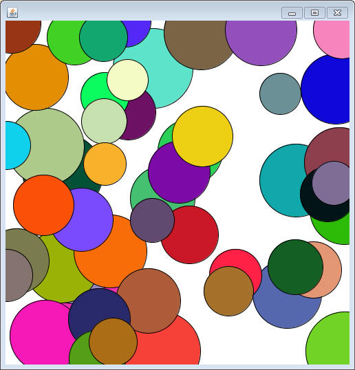
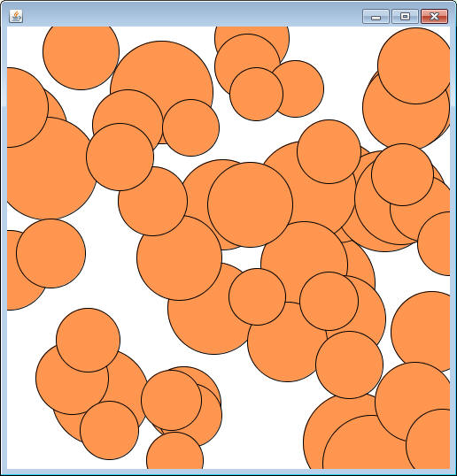
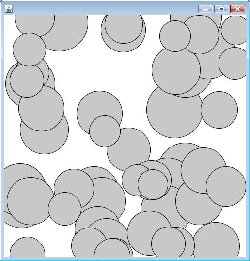
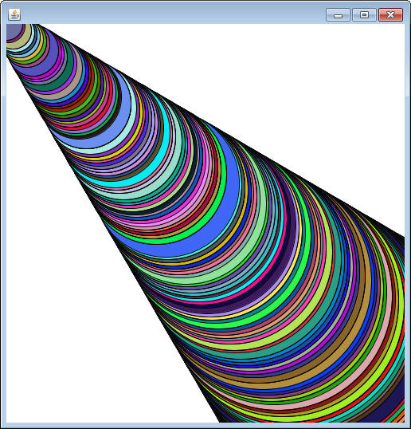

In the Comparable Interface project we reused the Circle class from the Draggable project. There was an issue that needed to be addressed. The Draggable project wanted Circles that had a random x and y, while the CircleViewer needed Circles that were specifically centered around a certain point. Having a single constructor was no longer an option. Instead of deleting one and replacing it with another, the solution is to have more than one Constructor.
//Constructs a Circle with a random x,y,radius, and Color public Circle() ... //Construcs a Circle with a specific x and y while randomizing the radius and Color public Circle(int x, int y)
This is terrifying, but perfectly legal. There are now two distinct ways of constructing a Circle. It is up to the client to decide if they want a completely random Circle or a Circle that's centered around a single point. This process of having multiple options for constructors that differ only by the parameters is known as overloading the constructor
How does Java know which constructor to call?
When overloading Constructors or methods, they must take in different parameters. You cannot have two constructors with the same parameters ( public Circle(int x, int y) and public Circle( int x, int y) are duplicate constructors ). The choice of which method is run is determined by simply passing in the necessary parameters of the right type.
At the moment there is one static method named centeredRunner in the CircleViewer class. Read through the method and you'll see that each Circle is constructed using new Circle(250,250). Since the parameters are two ints, the constructor that runs is the one with the header public Circle(int x, int y). The other constructor is simply ignored and not used.
Copy the following method to the CircleViewer class and notice that the only change that's been made is that the Circles are construced with no parameters ( new Circle() ). This means that the Circles will be constructed using the original constructor that randomizes the x and y, along with randomizing the radius to a smaller range.
public static void randRunner()
{
Circle[] circs = new Circle[50];
for(int i=0; i<circs.length; i++)
{
circs[i] = new Circle();
}
CircleViewer c = new CircleViewer(circs);
c.setVisible(true);
}
Run this method and you should see the familiar Circles from the Draggable project, all because we changed the parameters a little bit.

More Overloading
Let's add another constructor to Circle. Our goal with this one will be that it should act almost the same as the default constructor ( the constructor with no parameters ) except that the user should be able to pass in whichever red, green, and blue values they want the Circle to be. It should have the following header:
//Constructs a Circle with a random x,y and radius. The color of the Circle will have the red green and blue values as the parameters public Circle(int red, int green, int blue)
Fill in the code to make this constructor act as described. Remember that if this constructor is run, none of the others will be run, so make sure you assign values to all the instance fields.
Add the following method to the CircleViewer class. Notice again that the only thing that has changed is the parameters of the constructor. Now there's three ints, which represent the color that all the Circles should be.
public static void colorRunner()
{
Circle[] circs = new Circle[50];
for(int i=0; i<circs.length; i++)
{
circs[i] = new Circle(255,150,80);
}
CircleViewer c = new CircleViewer(circs);
c.setVisible(true);
}

Let's use this
If you're like most students, you probably have a Circle constructor that looks like the following:
public Circle(int tmpX, int tmpY)
This is a technique that Mr. Sacco taught you earlier in the year as a way to avoid shadowing, but it's not classy to have such ugly variable names in the parameter. A much cleaner version would have the following:
public Circle(int x, int y)
The problem that occurs is that your instance fields are probably named exacly the same as the parameters. An incorrect attempt to set the instance fields might look like the following:
x = x; y = y;
but this will have no effect on the instance fields x and y, it will only take from the parameter variable and assign to the same temporary variable.
The keyword this is a way of forcing Java to look at this particular instance of the object. When put before a variable it means that we're specifically talking about the instance fields.
this.x = x; this.y = y;
this allows us to name our parameters and instance fields the same, logical names and maintain the ability to change both.
Change the two constructors that take in parameters so that they have parameteers x, y or red, green, blue and then use this to set the instance fields. Run each of the runners again to make sure that you get the same results as before after the modification.
A Different Use of this
Right now you should have two constructors that look similar to the following:
public Circle()
{
x = (int)(Math.random()*500);
y = (int)(Math.random()*500);
radius = (int)(Math.random()*30+30);
this.red = (int)(Math.random()*256);
this.green = (int)(Math.random()*256);
this.blue = (int)(Math.random()*256);
}
public Circle(int red, int green, int blue)
{
x = (int)(Math.random()*500);
y = (int)(Math.random()*500);
radius = (int)(Math.random()*30+30);
this.red = red;
this.green = green;
this.blue = blue;
}
Ugh, look at all that repeated code. The first three lines randomize the x,y and radius in exactly the same way. Let's use some trickery to make our lives easier.
Imagine the second constructor as a two step process:
1) Do EXACTLY the same as the first constructor
2) Replace the randomized red, green, and blue with the parameters
Since the only difference between the two constructors was the red, green, and blue values. Following this procedure would produce the same result as what we currently have.
A second use of the keyword this is actually to automatically call and run a different constructor without having to retype all of the code. You follow the word this with parentheses just as you would if it were a method. Change your three-int constructor to be the following:
public Circle(int red, int green, int blue)
{
//call the no argument constructor, randomizing x, y, radius, red, green, and blue
this();
//since red, green, and blue were supposed to be specific, replace them with the parameters
this.red = red;
this.green = green;
this.blue = blue;
}
This saved us so much time! All three lines!!! While it's not necessary, being clever with the use of this can be useful when trying to make your objects work.
The constructor that you call using this will depend on the parameters that you give. If I wanted the above to be centered at 250,250, I would have called this(250,250) to start.
THE ONE RULE OF this
The only requirement of using this is that if you want to use it to call a constructor it MUST be the first line. No Exceptions.
The Gray Circles:
A color is gray if the red, green, and blue values are all the same number. Create a constructor with the following header:
//constructs an object with a random x, y, and radius. All three color values should be set to the parameter public Circle(int grayVal)
We could use several lines of code to write this constructor, but that's a lot of work. Using the this trick you can write this using only one line of code. Look at the three constructors you have available to you and decide which one you want to call.
Test it out with the following runner, which you can see only passes one int in as the value.
public static void grayRunner()
{
Circle[] circs = new Circle[50];
for(int i=0; i<circs.length; i++)
{
circs[i] = new Circle(200);
}
CircleViewer c = new CircleViewer(circs);
c.setVisible(true);
}

Overloaded Methods
Methods can be overloaded in the same way that constructors are. They should have the same exact name, but different parameters.
Add a method with the following header to the Circle class:
public void setLocation(int x, int y)
The purpose of the method is to set the x and y of the Circle to the parameters. Add the two lines of code necessary to make this happen.
While passing in an x and y for the location is fine, it's possible that the client might want to use a Point object instead.
Add a method with the following header to the Circle class:
public void setLocation(Point p)
This method has the same exact purpose, it just takes in an x and y bundled as a Point object. To complete this method, use only one line of code. Hint: the one line that you need is a call to the other setLocation method.
To test, add the following method to the CircleViewer class. Its purpose is to arrange a bunch of Circles along a diagonal using their radius. The math is not important, but if you look at the method you'll notice that the first half are set using one setLocation method (using an x and y), while the second half are set using the other setLocation method (using a Point)
public static void diagonalCircles()
{
Circle[] circs = new Circle[300];
for(int i=0; i < circs.length; i++)
{
circs[i] = new Circle(0,0);
}
Sorter.selectionSort(circs);
for( int i = 0 ; i < circs.length; i++)
{
int x = (circs[i].getRadius()-20)*500/180;
int y = x; //diagonals are on the x-y line
if( i < circs.length/2)
{
circs[i].setLocation(x,y);
}
else
{
Point p = new Point(x,y);
circs[i].setLocation(p);
}
}
CircleViewer c = new CircleViewer(circs);
c.setVisible(true);
}

An Overloaded Method We Already Use:
An example of a highly overloaded method is System.out.println. The idea is that it prints out the parameter, but many times that isn't a String. It needs to be able to take in ints, doubles, booleans, Objects, etc. We haven't had to worry about it too much since we just call the same method each time. This is thanks to overloading.
Technically System.out is a PrintStream object. Check out the API HERE and scroll down to see just how many println methods there are.
Recap:
- Overloading means having the same method/constructor but with different parameters. Each of the methods acts differently and the one chosen is based on the parameters when called.
public Circle() public Circle(int x, int y) public Circle(int red, int green, int blue) public Circle(int grayValue)
- this can be used to make sure that the variable you're referencing is an instance field. It's the ultimate protection against shadowing.
- this can be used within a constructor to first run another
constructor. It is useful when two constructors act in similar ways.
- If this is used, it must be the first line.
The compiler will make sure of this.
- methods can also be overloaded using the same strategy
public void setLocation(int x, int y) public void setLocaiton(Point p)